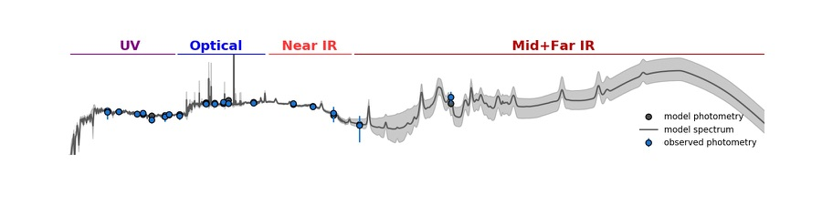
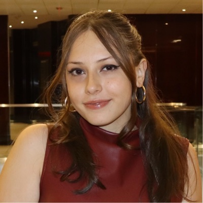
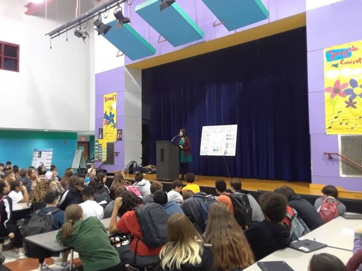
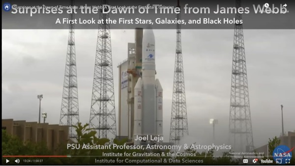
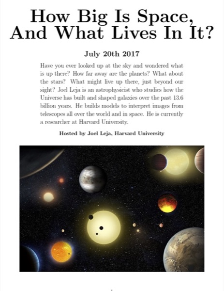
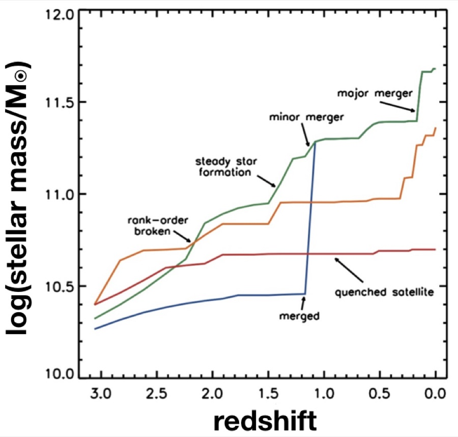
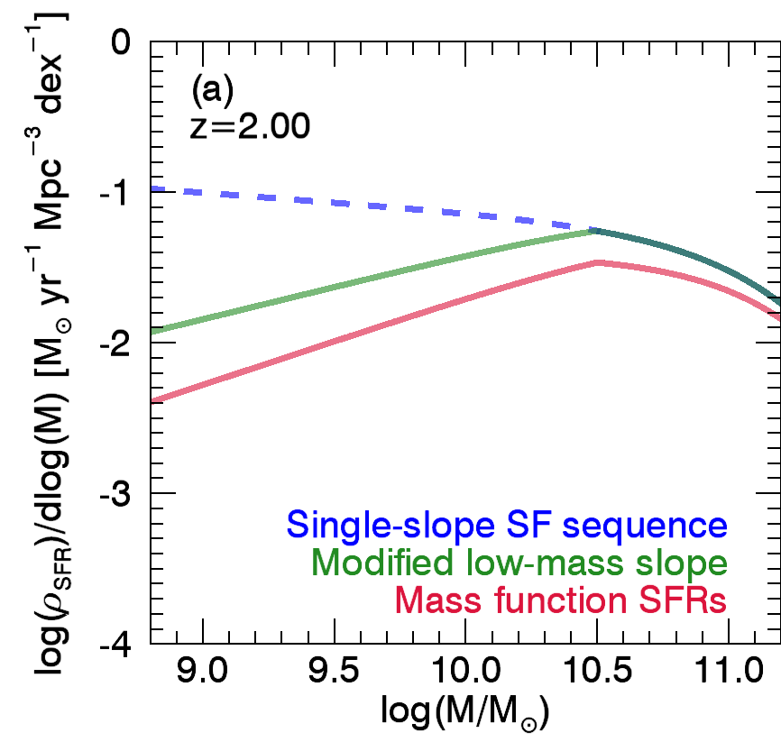
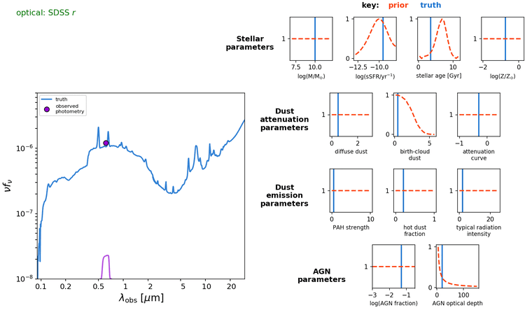
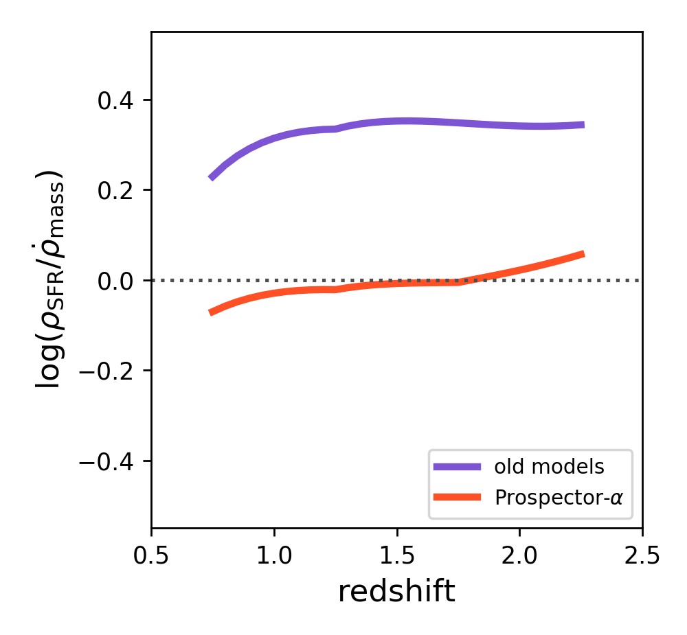

Intro
I am an associate professor of astronomy & astrophysics at The Pennsylvania State University. I hold the Dr. Keiko Miwa Ross Mid-Career endowed chair. My research focuses on understanding the processes of galaxy formation through combining modern, deep galaxy surveys with telescopes like JWST with statistics and machine learning.
In particular, I specialize in interpreting galaxy photometry and spectra using complex models for the stars, gas and dust living within them, in building and exploring analytical and empirical models of the evolving galaxy population as a whole, and in using astrostatistics and machine learning to better understand the universe. I’ve harnessed millions of hours of supercomputer time running specialized code to build a more complete picture of how galaxies form and evolve. I’ve worked on a wide range of science ranging from understanding the stellar origins of kilonova explosions to developing new methods for wide-field infrared galaxy surveys. I am very lucky to have been afforded the privilege of asking the big questions of the Universe!
Some of my current active projects include the Prime Focus Spectrograph galaxy survey, searching for first-light galaxies in the deep JWST survey UNCOVER, finding and understanding rare, red things in the early universe in the RUBIES (Red Unknowns: Bright Infrared Extragalactic Survey) survey with JWST, and developing software to analyze galaxy spectra with JWST. I’m also an active member of the Institute for Gravitation and the Cosmos and the Institute for Computational and Data Sciences at Penn State.
I believe we should all try to leave the world a better place than we found it. Here are my mentoring notes for my research group, loosely following a similar document from my postdoctoral mentor, Charlie Conroy.
Press
- June 2024 Little red dots in early universe baffle scientists (Space.com, Universe Today, Sky & Telescope, IFLScience, Earth.com, Mashable)
- Feb 2024 'Cosmic lighthouses' that cleared primordial fog identified with JWST (Science Daily)
- Nov 2023 JWST discovery of the second- and fourth-most distant galaxies (PopSci, Business Insider, Space.com, Newsweek, Daily Mail, MSN)
-
July 2023
Cosmic Front
Featured in an hour-long documentary on JWST’s first year of science, NHK / Japanese National Television.
- March 2023 Machine learning in astrophysics, PSU ICDS Feature Story
-
Feb 2023
Massive early galaxies defy prior understanding of the universe, ANU/PSU/NASA/Nature (NPR, the Guardian, the Atlantic, CNN, WTAJ, Fraser Cain interview)
plus a KUSI television interview.
- Feb 2023 NASA's James Webb Telescope uncovers new details in Pandora's Cluster, NASA/STScI/PSU Release
- Nov 2022 Bright light from early universe 'opens new chapter in astronomy', NASA/STScI/PSU Release
- Nov 2022 Tracing the origins of rare, cosmic explosions, Keck/Northwestern/PSU Release
- Sep 2021 Early, massive galaxies running on empty, STScI/ALMA/PSU Release
My Research Group
Current Group Members
Jakob Helton, Evolving Universe Postdoctoral Fellow aiming to understand physical conditions in the most distant galaxies in the early universe, such as JADES-z14.
Elijah Mathews, graduate student high-dimensional stellar pops fitting (resolved and unresolved) with neural net emulators.
Emilie Burnham, graduate student examining distant galaxy populations to understand the short-term timescales of fluctuations in their star formation rates.
Agrim Gupta, graduate student stellar populations modeling in the JWST UNCOVER deep field Abell 2744, focusing on the star formation rate of early quiescent galaxies.
Marta Laska, graduate student modeling distant galaxies.
Lishan Shi, Statistics graduate student using ultra-fast neural posterior estimators to rapidly analyze deep and wide surveys of the universe.
Connor Luettgenau, undergraduate researcher the local gas properties of early-universe galaxies, aided by strong gravitational lensing.

Allyson Garcia, undergraduate researcher measuring observed spectral properties of galaxies and connecting them to models to constrain the burstiness of star formation.
Former Group Members
Graduate Students & Postdocs
- Bingjie Wang, postdoctoral researcher, 2022–2025 — little red dots and ML-powered inference → Hubble Fellow at Princeton University
- Yijia Li, Ph.D. Penn State 2025, 2020–2025 — neural net-powered emission line modeling, author of cue → postdoctoral researcher at Northwestern University
- Kanishk Pandey, graduate student, 2023–2024
- Gautam Nagaraj, graduate student, 2021–2023 → postdoctoral researcher at EPFL
- Will Bowman, Ph.D. Penn State 2022, 2021–2022 — covariant data in galaxy inference → postdoctoral researcher at Yale University
- Imad Pasha, graduate student, Yale University, 2019–2020
- Jonathan Cohn, graduate student, Texas A&M, 2017–2018
Undergraduate Students
- Senti Bo, Nanjing University, 2025
- Si Rui, Nanjing University, 2025
- Nathan Cristello, Penn State, 2023–2024
- Junyu Zhang, B.S. Astronomy & Astrophysics Penn State 2023, 2021–2023 — finding rejuvenating galaxies, published in ApJ → Astronomy & Astrophysics graduate student at the University of Arizona
- Liam Schwartz, Penn State, 2021
- Leah Zuckerman, Brown University, 2020–2021 — published in ApJ
- Yuxin Dong, Brown University, 2019–2021 — published in ApJ
- Evan Haze Nunez, Smithsonian Astrophysical Observatory REU, 2018 — poster at the AAS
- Michael Bueno, Banneker Institute, 2017 — poster at the AAS
- Christopher Bradshaw, undergraduate thesis, Yale University, 2014–2015
Outreach
In addition to my professional mentoring, I believe that knowing more about science and the scientific process improves the lives of everyone (and — talking to folks about it is lots of fun!).

Flipped Science Fair
I host(ed) an annual reverse science fair, where professional researchers present their research to students from local elementary and middle schools. The students serve as “judges” and announce a winner at the end of the event. This encourages and develops outreach skills among researchers while simultaneously engaging the middle school students in a critical form of active learning.

Ashtekar Frontiers of Science Lecture
I gave an Ashtekar Frontiers of Science 2024 Lecture at Penn State, entitled “Surprises at the Dawn of Time from James Webb: A First Look at the First Stars, Galaxies, and Black Holes”, with an intro from Prof. Michael Eracleous. This was an exciting opportunity to share cutting-edge research from the James Webb Space Telescope to the Penn State community, with over 200 attendees!

Visiting URJ 6 Points Sci-Tech Academy
Giving talks to middle schoolers at science summer camp about my thesis research, and talking to them in their classrooms!
Research
Simple Models of Galaxy Assembly
I started my Ph.D in 2010 at Yale University with Professor Pieter van Dokkum. This was an exciting time to be studying galaxy evolution. We were in the middle of the first wide, deep, and unbiased (mass-selected) surveys of galaxy evolution at “cosmic noon”, spear-headed by ambitious programs with the Hubble Space Telescope such as 3D-HST and CANDELS. As a result, astronomers had now surveyed the vast majority of the galaxy population over the majority of cosmic time for the very first time. My advisor and I thought that it was now the ideal time to “put it all together” and write down how galaxies grew up in a simple analytical model. This was the beginning of my thesis.

However, after constructing and testing our analytical framework, we found a serious problem with this plan. Applying our model to two independent measurements of galaxy mass growth (the current rate of star formation and the current mass locked up in stars) resulted in galaxy growth rates which were systematically offset by a factor of two. This was a big problem. To put it in perspective, our model suggested that a typical ancestor of the Milky Way would grow by a factor of 4–16 from z~2, a confidence interval so large as to be almost useless!

A New Method to Measure Galaxy Properties
The problem lay in the models we used to convert galaxy observations into galaxy properties. While these models had had many successes over many years, they were not quite precise enough to answer the questions we needed to answer. We identified three specific problems:
- The models did not include enough of the relevant physics, e.g. emission from black holes or nebulae.
- The assumptions built into them were not physically self-consistent.
- The models needed to use more clever statistics to translate the weak observational constraints into very broad parameter estimates.
Over the end of my Ph.D and during my postdoctoral research, I worked closely with stellar populations experts Professor Charlie Conroy and Dr. Ben Johnson at the Center for Astrophysics | Harvard & Smithsonian to develop a new model addressing these problems: Prospector-α, built within the Prospector Bayesian inference framework.

A New Cosmic Consensus
We applied this new Prospector-α model to a mass-complete sample of 58,461 galaxies across 0.5 < z < 2.5 from the 3D-HST survey. These new inferences lowered the observed cosmic star formation rate density by ∼0.2 dex and increased the observed stellar mass growth by ∼0.1 dex, finally bringing these two measurements into agreement and implying an older, more quiescent Universe than found in previous work.

Selected Publications
I am an author of 230 publications, 10 of them first-author, with an h-index of 79 and roughly 22,000 citations as of May 2026. The complete list is on ADS; a selection follows, newest first.
-
Water absorption confirms cool atmospheres in two little red dots
Wang, Bingjie; Leja, Joel; et al., 2026, submitted to Nature -
It's More Complicated Than You Think: A Forward Model to Infer the Recent Star Formation History, Bursty or Not, of Galaxy Populations
Burnham, Emilie; Wang, Bingjie; Leja, Joel; et al., 2026, ApJ, 1001, 205 -
The Missing Hard Photons of Little Red Dots: Their Incident Ionizing Spectra Resemble Massive Stars
Wang, Bingjie; Leja, Joel; et al., 2025, ApJ, accepted -
Population Models for Star Formation Timescales in Early Galaxies: The First Step Towards Solving Outshining in Star Formation History Inference
Wang, Bingjie; Leja, Joel; et al., 2025, ApJ, 987, 184 -
Cue: A Fast and Flexible Photoionization Emulator for Modeling Nebular Emission Powered by Almost Any Ionizing Source
Li, Yijia; Leja, Joel; et al., 2025, ApJ, 986, 9 -
RUBIES: Evolved Stellar Populations with Extended Formation Histories at z ~ 7–8 in Candidate Massive Galaxies Identified with JWST/NIRSpec
Wang, Bingjie; Leja, Joel; et al., 2024, ApJL, 969, L13 -
Quantifying the Effects of Known Unknowns on Inferred High-redshift Galaxy Properties: Burstiness, the IMF, and Nebular Physics
Wang, Bingjie; Leja, Joel; et al., 2024, ApJ, 963, 74 -
The UNCOVER Survey: A First-look HST+JWST Catalog of Galaxy Redshifts and Stellar Population Properties Spanning 0.2 ≤ z ≤ 15
Wang, Bingjie; Leja, Joel; et al., 2024, ApJS, 270, 12 -
SBI++: Flexible, Ultra-fast Likelihood-free Inference Customized for Astronomical Applications
Wang, Bingjie; Leja, Joel; et al., 2023, ApJL, 952, L10 -
A New Census of the 0.2 < z < 3.0 Universe, Part II: The Star-Forming Sequence
Leja, Joel; et al., 2022, ApJ, 936, 165 -
A New Census of the 0.2 < z < 3.0 Universe, Part I: The Stellar Mass Function
Leja, Joel; et al., 2020, ApJ, 893, 111 -
An Older, More Quiescent Universe from Panchromatic SED Fitting of the 3D-HST Survey
Leja, Joel; et al., 2019, ApJ, 877, 140 -
How to Measure Galaxy Star Formation Histories II: Nonparametric Models
Leja, Joel; et al., 2019, ApJ, 876, 3 -
Deriving Physical Properties from Broadband Photometry with Prospector: Description of the Model and a Demonstration of its Accuracy
Leja, Joel; et al., 2017, ApJ, 837, 170 -
Tracing Galaxies Through Cosmic Time with Number Density Selection
Leja, Joel; et al., 2013, ApJ, 766, 33
Contact
My office is Davey Laboratory 515. You can reach me electronically at joel.leja@psu.edu.